전기공사기사 (2008-03-02 기출문제)
1과목: 전기응용 및 공사재료
1. 열차가 곡선 궤도를 운행할 때 차륜의 플런지와 레일 두부간의 측면 마찰을 피하기 위하여 내측 궤조의 궤간을 약간 넓히는 것을 무엇이라 하는가?
- 고도
- 유간
- 철차각
- 확도
(정답률: 89%)

2. 네온 전구의 용도로서 잘못된 것은?
- 일정한 전압에서 점등되므로 검진기, 교류 파고값의 측정에 이용할 수 없다.
- 소비 전력이 적으므로 배전반의 파이롯트램프 등에 적합하다.
- 음극글로우를 이용하고 있어 직류의 극성 판별용에 사용된다.
- 네온 전구는 전극간의 길이가 짧으므로 부글로우를 발광으로 이용한 것이다.
(정답률: 85%)
3. 반사율(p), 투과율(τ),흡수율(δ) 일때 이들의 관계식은?
- p + τ + δ = 1
- p - τ - δ = 1
- p - τ + δ = 1
- p + τ - δ = 1
(정답률: 92%)
4. 권선형 유도전동기의 기동법에서 비례추이 특성을 이용하여 기동하는 방법은?
- 1차 저항 기동법
- 2차 저항 기동법
- 기동 보상기법
- 분상 기동법
(정답률: 85%)
5. 1[kW]의 전열기를 이용하여 20[℃]의 물 5[ℓ]를 70[℃]까지 올리는데 요하는 시간 [min]은 약 얼마인가?
- 13.4
- 15.9
- 17.4
- 21.6
(정답률: 73%)
6. 구리의 원자량은 63.54이고 원자가가 2일 때, 전기 화학당량은 약 얼마인가? (단, 구리 화학당량과 전기 화학당량의 비는 약 96494임)
- 0.03292[mg/C]
- 0.3292[mg/C]
- 0.3292[g/C]
- 0.03292[g/C]
(정답률: 72%)
7. 전자 빔 가열의 특징이 아닌 것은?
- 에너지의 밀도나 분포를 자유로이 조절할 수 없다.
- 고융점 재료 및 금속박 재료의 용접이 쉽다.
- 진공 중에서 가열이 가능하다.
- 가열범위가 극히 국한 된 부분에 집중 시킬 수 있어서 열에 의한 변질이 될 부분을 적게 할 수 있다.
(정답률: 78%)
8. 에르(Heroult)식 전기로는 어느 방식의 노(爐)인가?
- 직접식 저항로
- 간접식 저항로
- 유도로
- 아크로
(정답률: 71%)
9. 평균 구면 광도 100[cd]의 전구 5개를 직경 10[m]인 원형의 방에 점등할 때 조명률 0.5, 감광보상률 1.5라하면 방의 평균 조도 [lx]는 약 얼마인가?
- 3
- 9
- 27
- 40
(정답률: 79%)
10. 다음 그림 기호가 나타내는 반도체 소자의 명칭은?
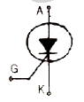
- SSS
- PUT
- SCR
- DV
(정답률: 91%)
11. 다음 중 절연전선에 해당 되지 않는 것은?(오류 신고가 접수된 문제입니다. 반드시 정답과 해설을 확인하시기 바랍니다.)
- IV
- IE
- ACSR
- DV
(정답률: 77%)
12. 강제 전선과 공사중 노출 배관공사에서 관을 직각으로 굽히는 곳에 사용한다. 3방향으로 분기할 수 있는 “T"형과 4방향으로 분기할 수 있는 cross형이 있는 자재는?
- 새들
- 유니온 커플링
- 유니버설 엘보우
- 노우멀 밴드
(정답률: 84%)
13. 다음 중 절연 내력이 가장 낮은 것은?
- 공기
- 프레온
- SF6
- 수소
(정답률: 73%)
14. 초고압 장거리 송전선로에 접속되는 1차 변전소에서 페란티 효과를 방지하기 위하여 설치하는 것은?
- 직렬리액터
- 병렬콘덴서
- 분로리액터
- 직렬콘덴서
(정답률: 83%)
15. 무대 조명의 배치별 구분 중 무대 상부 배치 조명에 해당되는 것은?
- Foot light
- Tower light
- Suspension Spot light
- Ceiling Spot light
(정답률: 88%)
16. 전선 재료(도전재료)로서 구비하여야 할 조건 중 틀린 것은?
- 도전률이 클 것
- 접속이 쉬울 것
- 인장 강도가 비교적 클 것
- 내식성이 작을 것
(정답률: 93%)
17. 배전반 및 분전반에 대한 설명 중 잘못된 것은?
- 개폐기를 쉽게 개폐할 수 있는 장소에 시설하여야한다.
- 배전반 및 분전반을 옥측 또는 옥외에 시설하는 경우에는 방수형의 것을 사용하여야 한다.
- 배전반 및 분전반에 시설하는 기구 및 전선은 쉽게 점검할 수 있도록 시설하여야 한다.
- 배전반이나 분전반을 넣는 금속제의 함 및 이를 지지하는 금속프레임 또는 구조물은 접지를 할 필요가 없다.
(정답률: 92%)
18. 바이어스 테이프에 절연성 니스를 몇 차례 바르고 다시 건조시킨 것으로 점착성은 없으나 절연성, 내온성 및 내유성이 강한 절연 테이프로서 연피 케이블의 접속에 사용하는 것은?
- 자기용 압착테이프
- 면테이프
- 고무테이프
- 리노테이프
(정답률: 91%)
19. 알칼리 축전지에서 소결식에 해당하는 초급방전형은?
- AM 형
- AMH 형
- AL 형
- AH - S 형
(정답률: 93%)
20. 특고압 배전선로에 사용하는 애자로서 특히 염진해 오손이 심한 지역(바닷가 등)에서 사용되며 애자의 애자핀이 별도 분리되어 있으며 사용시는 조립하여 사용하는 애자는?
- 지선용 구형애자
- 라인포스트애자
- 고압핀애자
- T형인류애자
(정답률: 86%)
2과목: 전력공학
21. 송전선로의 페란티 효과에 관한 설명으로 옳지 않은 것은?
- 송전선로에 충전전류가 흐르면 수전단 전압이 송전단 전압보다 높아지는 현상을 말한다.
- 페란티 효과를 방지하기 위하여 선로에 분로리액터를 설치한다.
- 장거리 송전선로에서 정전용량으로 인하여 발생한다.
- 페란티 현상을 방지하기 위해서는 진상 무효전력을 공급하여야 한다.
(정답률: 10%)
22. 직접 접지 방식에 대한 설명으로 옳지 않은 것은?
- 변압기 절연이 낮아진다.
- 지락전류가 커진다.
- 지락고장시의 중성점 전위가 높다.
- 통신선의 유도장해가 크다.
(정답률: 12%)
23. 기력발전소의 열사이클 중 재열 사이클에서 재열기로 가열하는 것은?
- 증기
- 공기
- 급수
- 석탄
(정답률: 11%)
24. 송전선로의 코로나 임계전압이 높아지는 경우가 아닌 것은?
- 상대 공기밀도가 적다.
- 전선의 반지름과 선간거리가 크다.
- 날씨가 맑다.
- 낡은 전선을 새 전선으로 교체하였다.
(정답률: 17%)
25. 송전계통의 중성점 접지용 소호리액터의 인덕턴스 L은? (단, 선로 한 선의 대지정전용량을 C라 한다.)
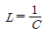
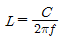
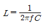
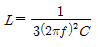
(정답률: 13%)
26. 어느 기력발전소에서 40000kWh를 발전하는데 발열량 860kcal/kg의 석탄이 60톤 사용된다. 이 발전소의 열효율은 몇 약 [%] 인가?
- 56.7%
- 66.7%
- 76.7%
- 86.7%
(정답률: 12%)
27. 전력계통의 전압조정과 무관한 것은?
- 발전기의 조속기
- 발전기의 전압조정장치
- 전력용콘덴서
- 전력용 분로리액터
(정답률: 11%)
28. 파동 임피던스 Z1=500Ω 인 선로의 종단에 파동 임피던수 Z2=1000Ω의 변압기가 접속되어 있다. 지금 선로에서 파고 ei =600kV의 전압이 진입할 경우, 접속점에서의 전압의 반사파 파고는 몇 [kV]인가?
- 200kV
- 300kV
- 400kV
- 500kV
(정답률: 11%)
29. 환상선로의 단락보호에 사용하는 계전방식은?
- 비율차동계전방식
- 방향거리계전방식
- 과전류계전방식
- 선택접지계전방식
(정답률: 12%)
30. 3상 송전선로에서 선간단락이 발생하였을 때 다음 중 옳은 것은?
- 정상전류와 역상전류가 흐른다.
- 정상전류, 역상전류 및 영상전류가 흐른다.
- 역상전류와 영상전류가 흐른다.
- 정상전류와 영상전류가 흐른다.
(정답률: 12%)
31. 다음 중 부하전류의 차단능력이 없는 것은?
- 단로기
- 가스차단기
- 유입개폐기
- 진공차단기
(정답률: 11%)
32. 그림은 유입차단기(탱크형)의 구조도이다. A의 명칭은?
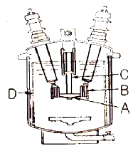
- 절연 liner
- 승강간
- 가동 접촉자
- 고정 접촉자
(정답률: 9%)
33. 154/22.9kV, 40MVA인 3상변압기의 %리액턴스가 14%라면 1차측으로 환산한 리액턴스는 약 몇 [Ω]인가?
- 5
- 18
- 83
- 560
(정답률: 9%)
34. 루프(loop)배전방식에 대한 설명으로 옳은 것은?
- 전압강하가 적은 이점이 있다.
- 시설비가 적게 드는 반면에 전력손실이 크다.
- 부하밀도가 적은 농·어촌에 적당하다.
- 고장시 정전범위가 넓은 결점이 있다.
(정답률: 8%)
35. 수압철관의 안지름이 4m인 곳에서의 유속이 4m/s이었다. 안지름이 3.5m인 곳에서의 유속은 약 몇 [m/s]인가?
- 4.2m/s
- 5.2m/s
- 6.2m/s
- 7.2m/s
(정답률: 11%)
36. 3상 4선식 배전방식에서 1선당의 최대전력은? (단, 상전압 :V, 선전류 : I 라 한다.)
- 0.5VI
- 0.57VI
- 0.75VI
- 1.0VI
(정답률: 11%)
37. 단상 2선식(110[V]) 저압 배전선로를 단상 3선식(110/220[V])으로 변경하였을 때 전선로의 전압 강하율은 변경전에 비해서 어떻게 되는가? (단, 부하용량은 변경 전후에 같고 역률은 1.0이며 평형부하이다.)
- 1/4로 된다.
- 1/3로 된다.
- 1/2로 된다.
- 변하지 않는다.
(정답률: 8%)
38. 역율 0.8(지상)의 2800kW 부하에 전력용콘덴서를 병렬로 접속하여 합성역률을 0.9로 개선하고자 할 경우, 필요한 전력용콘덴서의 용량은 약 몇 [kVA]인가?
- 372kVA
- 558kVA
- 744kVA
- 1116kVA
(정답률: 6%)
39. 1대의 주상변압기에 역률(늦음) cosθ1, 유효전력 P[kW]의 부하와 역률(늦음) cosθ2, 유효전력 P1[kW]의 부하가 병렬로 접속되어 있을 경우 주상변압기에 걸리는 피상전력은 어떻게 나타내는가?
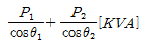
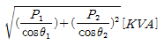
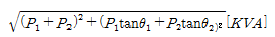
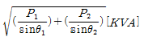
(정답률: 13%)
40. 피뢰기의 충격방전 개시전압은 무엇으로 표시하는가?
- 직류전압의 크기
- 충격파의 평균치
- 충격파의 최대치
- 충격파의 실효치
(정답률: 10%)
3과목: 전기기기
41. 기전력에 고조파를 포함하고 중성점이 접지되어 있을때에는 선로에 제3고조파를 주로 하는 충전전류가 흐고 변압기에서 제3고조파의 영향으로 통신 장해를 일으키는 3상 결선법은?
- △-△ 결선
- Y - Y 결선
- Y - △ 결선
- △ - Y 결선
(정답률: 14%)
42. 단상 유도전압 조정기에서 단락 권선의 역할은?
- 전압조정 용이
- 절연보호
- 철손 경감
- 전압강하 경감
(정답률: 7%)
43. 직류기의 전기자에 사용되는 권선법 중 가장 많이 사용하는 것은?
- 단층권
- 2층권
- 환상권
- 개로권
(정답률: 10%)
44. 15[kW] 3상 유도 전동기의 기계손이 350[W], 전부하시의 슬립이 3[%]이다. 전부하시의 2차 동손은 약 몇[W]인가?
- 523
- 475
- 411
- 365
(정답률: 9%)
45. 동기 발전기 전기자 권선의 층간 단락 보호 계전기로 가장 적합한 것은?
- 온도 계전기
- 접지 계전기
- 차동 계전기
- 과부하 계전기
(정답률: 14%)
46. 출력 300[kW], 전기자저항 0.0083[Ω]의 직류분권 발전기가 전부하에서 운전할 때 단자전압 250[V] 계자전류는 14[A]이다. 전부하에서의 유기기전력은 약 몇[V]인가?
- 270
- 260
- 250
- 240
(정답률: 8%)
47. 교류 발전기의 동기 임피던스는 철심이 포화하면 어떻게 되는가?
- 증가한다.
- 관계없다.
- 감소한다.
- 증가, 감소가 불명확하다.
(정답률: 9%)
48. 광스위치, 릴레이, 카운터 회로 등에 사용되는 감광 역저지 3단자 사이리스터는 어느 것인가?
- LAS
- SCS
- SSS
- LASCR
(정답률: 12%)
49. 2차로 환산한 임피던스가 각각 0.03+j0.02[Ω], 0.02+j0.03[Ω]인 단상변압기 2대를 병렬로 운전시킬 때 분담 전류는?
- 크기는 같으나 위상이 다르다.
- 크기와 위상이 같다.
- 크기는 다르나 위상이 같다.
- 크기와 위상이 다르다.
(정답률: 15%)
50. 수은 정류기에서 역호 현상의 큰 원인은?
- 과부하 전류
- 내부 잔존가스 압력의 저하
- 전원 주파수의 저하
- 내부 저항의 저하
(정답률: 9%)
51. 3상 동기발전기의 매극, 매상의 슬롯수를 3이라 하면 분포 계수는?
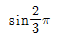
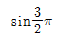
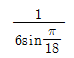
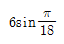
(정답률: 15%)
52. 정격용량 10000[kVA], 정격전압 6000[V], 극수 12,주파수 60[Hz], 1상의 동기 임피던스 2[Ω] 인 3상 동기 발전기가 있다. 이 발전기의 단락비는 얼마인가?
- 1.0
- 1.2
- 1.4
- 1.8
(정답률: 6%)
53. 60[Hz], 4극, 3상 권선형 유도 전동기의 회전자가 슬립 0.1로 회전할 때 회전자 주파수는 몇 [Hz]인가?
- 6
- 54
- 60
- 600
(정답률: 9%)
54. 동기전동기의 공급 전압에 대하여 앞선 전류의 전기자반작용은?
- 증자작용
- 감자작용
- 교차 자화작용
- 소호리액터작용
(정답률: 13%)
55. 정격 3300/210[V]의 변압기의 1차에 3300[V]를 가하고 2차에 부하를 접속하니 1차에 3[A]의 전류가 흘렀다. 2차 출력[kVA]은 약 얼마인가?
- 2.5
- 4.9
- 9.9
- 19.8
(정답률: 8%)
56. 20[Hp], 4극, 60[Hz]의 3상 유도 전동기가 있다. 전부하 슬립이 4[%]dlek. 전부하시의 토크[kg·m]는 약 얼마인가? (단, 1[HP]은 746[W]이다.)
- 11.41
- 10.41
- 9.41
- 8.41
(정답률: 9%)
57. 단상 직권전동기의 종류가 아닌 것은?
- 직권형
- 아트킨손형
- 보상직권형
- 유도보상직권형
(정답률: 14%)
58. 직류발전기에서 회전속도가 빨라지면 정류가 힘드는 이유는?
- 정류주기가 길어진다.
- 리액턴스 전압이 커진다.
- 브러시 접촉저항이 커진다.
- 정류자속이 감소한다.
(정답률: 9%)
59. 변압기의 이상적인 병렬 운전에 대한 설명이 아닌 것은?
- 각 변압기가 그 용량에 비례하여 전류를 분담한다.
- 각 변압기의 자화 전류는 정현파가 된다.
- 병렬로 된 각 변압기 폐회로에는 순환 전류가 흐르지 않는다.
- 각 변압기에 대한 전류의 대수 합이 언제나 전체의 부하 전류와 같다.
(정답률: 5%)
60. 전슬롯수 24의 고정자에 단상 4극의 권선을 설치한 경우 인접한 슬롯 사이의 전기각은?
- 30°
- 60°
- 90°
- 120°
(정답률: 8%)
4과목: 회로이론 및 제어공학
61. 개루프 전달함수가 다음과 같을 때 폐루프 전달함수는?
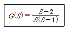
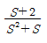
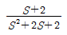
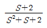
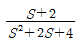
(정답률: 9%)
62. 4단자 회로에서 4단자 정수를 A, B, C, D 라 하면 영상 임피던스
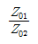
는?- D/A
- B/C
- C/B
- A/D
(정답률: 10%)
63. 전송선로에서 무손실일 때 L=96[mH], C=0.6[㎌]이면 특성 임피던스는 몇 [Ω]인가?
- 100
- 200
- 300
- 400
(정답률: 12%)
64. 회로를 테브난(Thevenin)의 등가회로로 변환하려고 한다. 이때 테브난의 등가저항[Ω] RT 와 등가전압[V] VT 는?
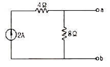
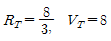
- RT=6, VT=12
- RT=8, VT=16
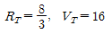
(정답률: 7%)
65. 한 상의 임피던스가 6 + j8[Ω]인 △부하에 대칭선간 전압 200[V]를 인가한 경우의 3상 전력은 몇 [W]인가?
- 2400
- 4157
- 7200
- 12470
(정답률: 8%)
66. 3상 교류대칭 전압에 포함되는 고조파 중에서 상회전이 기본파에 대하여 반대되는 것은?
- 제3고조파
- 제5고조파
- 제7고조파
- 제9고조파
(정답률: 11%)
67. 회로에서 스위치 K는 닫혀진 상태에 있었다. t = 0에서 K를 열었을 때 다음의 서술 중 잘못된 것은?
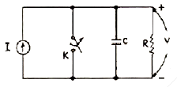
- t≥0에 대한 회로방정식은
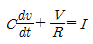
이다. - V(0+)=0 이다.
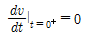
이다.- V의 정상값은 V33=RI 이다.
(정답률: 5%)
68. 전압 대칭분을 각각 V0, V1, V2 전류의 대칭분을 각각 I0, I1, I2 라 할 때 대칭분으로 표시되는 전전력은 얼마인가?
- V0I1+V1I2+V2I0
- V0I0+V1I1+V2I2
- 3V0I1+3V1I2+3V2I0
- 3V0I0+3V1I1+3V2I2
(정답률: 9%)
69. 그림과 같은 회로의 전압비 전달함수 V(S)/V(S)는?
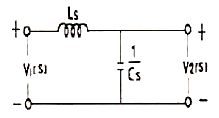
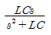
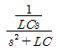
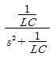
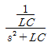
(정답률: 7%)
70. 5[mH]인 두 개의 자기 인덕턴스가 있다. 결합 계수를 0.2로부터 0.8까지 변화시킬 수 있다면 이것을 접속하여 얻을 수 있는 합성 인덕턴스의 최대값과 최소값은 각각 몇 [mH]인가?
- 20,8
- 20,2
- 18,8
- 18,2
(정답률: 8%)
71. 특성 방정식 s3+2s4+2s3+3s2+4s+1을 Routh-Hurwitz 판별법으로 분석한 결과이다. 옳은 것은?
- s-평면의 우반면에 근이 존재 하지 않기 때문에 안정한 시스템이다.
- s-평면의 우반면에 근이 1개 존재 하기 때문에 불안정한 시스템이다.
- s-평면의 우반면에 근이 2개 존재 하기 때문에 불안정한 시스템이다.
- s-평면의 우반면에 근이 3개 존재 하기 때문에 불안정한 시스템이다.
(정답률: 6%)
72. 그림과 같은 회로는 어떤 논리회로 인가?
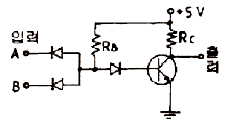
- AND 회로
- NAND 회로
- OR 회로
- NOR 회로
(정답률: 6%)
73. f(t) = e-at 의 Z-변환은?
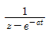
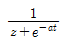
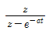
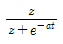
(정답률: 11%)
74. PID 동작은 어느 것인가?
- 사이클링과 오프셋이 제거되고 응답속도가 빠르며 안정성도 있다.
- 응답속도를 빨리 할 수 있으나 오프셋은 제거되지 않는다.
- 오프셋은 제거되나 제어동작에 큰 부동작 시간이 있으면 응답이 늦어진다.
- 사이클링을 제거할 수 있으나 오프셋이 생긴다.
(정답률: 10%)
75. 다음 요소 중 피드백(feed back) 제어계의 제어장치에 속하지 않는 것은?
- 설정부
- 제어요소
- 검출부
- 제어대상
(정답률: 6%)
76. 특성 방정식이 s4+s3+3s2+Ks+2=0인 제어계가 안정하기 위한 K의 범위는?
- 0 < K < 3
- 2< K < 3
- 1 < K < 2
- 3 < K
(정답률: 5%)
77. 다음과 같은 상태방정식으로 표현되는 제어계에 대한 서술 중 바르지 못한 것은?
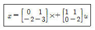
- 이 제어계는 2차 제어계이다.
- 이 제어계는 부족 제동된 상태이다.
- x는 (2x1)의 계위를 갖는다.
- (s+1)(s+2)=0 이 특성 방정식이다.
(정답률: 11%)
78. G(jw) = j0.1w 에서 w = 0.01[rad/sec] 일 때 계의 이득 [dB]은 얼마인가?
- -100
- -80
- -60
- -40
(정답률: 9%)
79. 블록 다이어그램에서
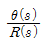
의 전달함수는?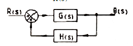
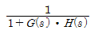
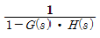
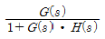
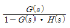
(정답률: 8%)
80. 샘플러의 주기를 T라 할 때 S-평면상의 모든점은식 Z=eST 에 의하여 Z-평면상에 사상된다. S-평면의 좌반 평면상의 모든 점은 Z-평면상 단위 원의 어느 부분으로 사상되는가?
- 내점
- 외점
- 원주상의 점
- Z-평면전체
(정답률: 13%)
5과목: 전기설비기술기준 및 판단기준
81. 발열선을 도로, 주차장 또는 조영물의 조영재에 고정시켜 시설하는 경우, 발열선에 전기를 공급하는 전로의 대지전압은 몇 [V] 이하 이어야 하는가?
- 220V
- 300V
- 380V
- 600V
(정답률: 13%)
82. 345kV의 가공송전선로를 평지에 건설하는 경우 전선의 지표상 높이는 최소 몇 [m] 이상이어야 하는가?
- 7.58m
- 7.95m
- 8.28m
- 8.85m
(정답률: 13%)
83. 내부에 고장이 생긴 경우에 자동적으로 이를 전로로부터 차단하는 장치를 설치하여야 하는 조상기(調相機) 뱅크 용량은 몇 [kVA] 이상 인가?
- 3000kVA
- 5000kVA
- 10000kVA
- 15000kVA
(정답률: 13%)
84. 가공전선로에 사용하는 지지물의 강도계산에 적용하는 풍압하중의 종별로 알맞은 것은?
- 갑종, 을종, 병종
- A종, B종, C종
- 1종, 2종, 3종
- 수평, 수직, 각도
(정답률: 12%)
85. 직류 전기 철도용 급전선과 가공 직류 전차선을 접속하는 전선을 매어다는 금속선은 그 전선으로부터 애자로 절연하고 또한 이에 실시하는 접지공사로 알맞은것은?
- 제1종 접지공사
- 제2종 접지공사
- 제3종 접지공사
- 특별 제3종 접지공사
(정답률: 7%)
86. 사람이 상시 통행하는 터널안의 교류 220V의 배선을 애자사용 공사에 의하여 시설할 경우 전선은 노면상몇 P[m]이상의 높이로 시설하여야 하는가?
- 2.0m
- 2.5m
- 3.0m
- 3.5m
(정답률: 12%)
87. 옥내에 시설하는 관등회로의 사용전압이 1000V를 넘는 방전관에 네온 방전관을 사용하고, 관등회로의 배선은 애자사용 공사에 의하여 시설할 경우 다음 설명 중 옳지 않은 것은?
- 전선은 네온 전선일 것
- 전선 상호간의 간격은 6cm 이상일 것
- 전선의 지지점간의 거리는 1m 이하일 것
- 전선은 조영재의 앞면 또는 위쪽면에 붙일 것
(정답률: 6%)
88. 400V미만인 저압용 전동기의 외함을 접지공사할 때 접지선(연동선)의 최소 지름(mm)과 최대 접지저항 [Ω]은?
- 6mm2, 100
- 4mm2, 10
- 2.5mm2, 100
- 1.5mm2, 10
(정답률: 9%)
89. 고압 가공선로의 지지물에 대한 경간의 제한 기준으로 옳지 않은 것은?
- A종 철주를 사용하는 경우 최대 경간은 150mm이다.
- 철탑을 사용하는 경우 최대 경간은 600m이다.
- 경간이 100m를 넘는 경우는 지름 4.5mm 이상의 동복강선을 고압 가공전선으로 사용한다.
- 고압 가공전선로의 전선으로 단면적 22mm2 이상의 경동연선을 사용하는 경우 A종 철주의 경간은 300m 이하이어야 한다.
(정답률: 5%)
90. 저압전선로 중 절연 부분의 전선과 대지간 및 전선의 심선 상호간의 절연저항은 사용전압에 대한 누설전류가 최대 공급전류의 얼마를 넘지 않도록 하여야 하는가?
- 1/4000
- 1/3000
- 1/2000
- 1/1000
(정답률: 10%)
91. 어느 공장에서 440V 전동기 배선을 사람이 닿을 우려가 있는 곳에 금속관으로 시공하고자 한다. 이 금속관을 접지할 때 그 저항값은 몇 [Ω]이하로 하여야 하는가?
- 10
- 30
- 50
- 100
(정답률: 11%)
92. 점멸장치와 타임스위치 등의 시설과 관련하여 다음 ( )에 알맞은 것은?
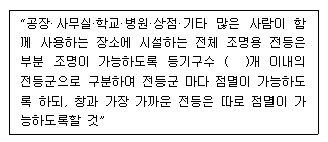
- 4
- 6
- 8
- 10
(정답률: 8%)
93. 가공전선로의 지지물에 사용하는 지선의 시설과 관련하여 다음 중 옳지 않은 것은?
- 지선의 안전율은 2.5 이상, 허용 인장하중의 최저는 3.31kN으로 할 것
- 지선에 연선을 사용하는 경우 소선(素線) 3가닥 이상의 연선 일 것
- 지선에 연선을 사용하는 경우 소선의 지름이 2.6mm 이상의 금속선을 사용한 것일 것
- 가공전선로의 지지물로 사용하는 철탑은 지선을 사용하여 그 강도를 분담시키지 않을 것
(정답률: 11%)
94. 스러스트 베어링의 온도가 현저히 상승하는 경우 자동적으로 이를 전로로부터 차단하는 장치를 시설하여야 하는 수차 발전기의 용량은 몇 [kVA]이상 인가?
- 500kVA
- 1000kVA
- 1500kVA
- 2000kVA
(정답률: 8%)
95. 사용전압이 35000V이하인 특별고압 가공전선과 가공약전류 전선을 동일 지지물에 시설하는 경우 특별고압 가공전선로의 보안공사로 알맞은 것은?
- 고압 보안공사
- 제1종 특별고압 보안공사
- 제2종 특별고압 보안공사
- 제3종 특별고압 보안공사
(정답률: 12%)
96. 방전등용 변압기의 2차 단락전류나 관등회로의 동작전류가 몇 [mA] 이하인 방전등을 시설하는 경우 방전 등용 안정기의 외함 및 방전등용 전등기구의 금속제 부분에 옥내 방전등공사의 접지공사를 하지 않아도 되는가? (단, 방전등용 안정기를 외함에 넣고 또한 그 외함과 방전등용 안정기를 넣을 방전등용 전등기구를 전기적으로 접속하지 않도록 시설한다고 한다.)
- 25mA
- 50mA
- 75mA
- 100mA
(정답률: 7%)
97. 최대사용전압이 1차 22000V, 2차 6600V의 권선으로서 중성점 비접지식 전로에 접속하는 변압기의 특별고압측 절연내력 시험전압은 몇 [V]인가?
- 24000V
- 27500V
- 33000V
- 44000V
(정답률: 13%)
98. 사용전압이 170000V 이하인 특별고압 가공전선로를 시가지에 시설하는 경우, 지지물로 사용하는 것이 아닌 것은?
- 목주
- 철탑
- 철근 콘크리트주
- 철주
(정답률: 9%)
99. 다음 ( ㉠ ), ( ㉡ ) 에 알맞은 것은?
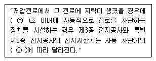
- ㉠ 0.5, ㉡ 정격차단속도
- ㉠ 0.5, ㉡ 정격감도전류
- ㉠ 1.0, ㉡ 정격차단속도
- ㉠ 1.0, ㉡ 정격감도전류
(정답률: 11%)
100. 66000V 송전선로의 송전선과 수목과의 이격거리는 최소 몇 [m]이상이어야 하는가?
- 2.0m
- 2.12m
- 2.24m
- 2.36m
(정답률: 7%)